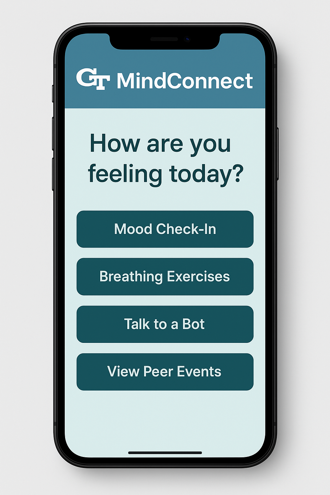

Our Poster

Let’s Talk, De-Stress, and Get Support – Anytime, Anywhere
At Georgia Tech, over 60% of students report severe anxiety and nearly half report depressive symptoms that interfere with daily life. Traditional counseling services exist, but stigma, wait times, and a lack of awareness often prevent students from getting help. This initiative combines two solutions: biweekly Peer Support Circles for in-person connection and GT MindConnect, a mobile-friendly app offering 24/7 tools and support.
Our approach builds on programs like Mental Health Mondays and Let’s Talk, but focuses on making support more approachable and immediate. Inspired by models at the University of Michigan and UCLA, we aim to make wellness conversations a natural part of campus life.
Launching Fall 2025, Peer Support Circles will meet biweekly at student hubs like West Village Lounge and Clough Commons. These sessions are designed as judgment-free zones where students can listen, reflect, and share as much or as little as they want. Trained peer leaders from GT Active Minds will guide each session using calming exercises, relatable themes like burnout and homesickness, and resource sharing.
Light refreshments will be offered to make the spaces inviting, and anonymous feedback will help us adjust each session to student needs.
To reach students anytime, GT MindConnect offers a digital lifeline. The app features:
The app will be piloted with students, with feedback used to refine features. Future updates may include booking CAPS appointments and real-time chats with peer counselors.
Help us shape Peer Support Circles and GT MindConnect. Tell us your preferred session times, topics, and app features through this quick survey.